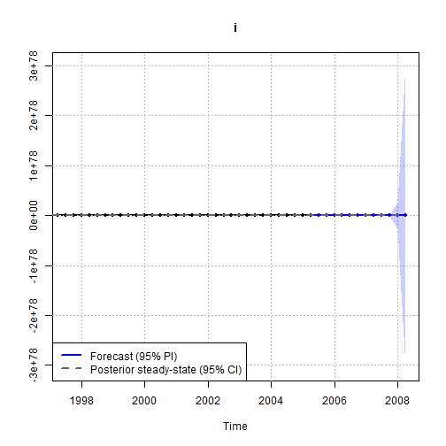
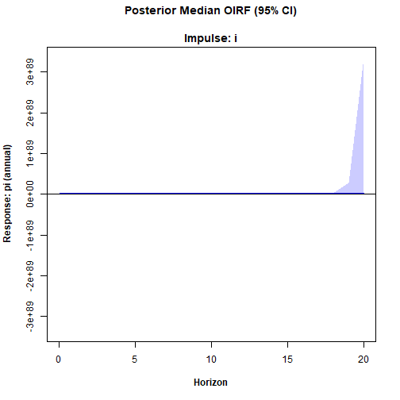
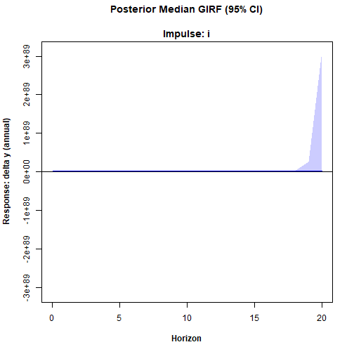

Homoscedastic steady-state BVAR (Villani, 2009)
Source:vignettes/Homoscedastic-steady-state-BVAR.Rmd
Homoscedastic-steady-state-BVAR.RmdHere we estimate the original (homoscedastic - i.e. constant
innovation covariance matrix \(\Sigma_{u}\)) steady-state BVAR model from
Section 4.1 of Villani (2009). See ?bvar for details on the
model.
First, let us attach the package and load the data.
library(SteadyStateBVAR)
data("Villani2009")
yt <- Villani2009The data set contains quarterly data for Sweden over the time period 1980Q1–2005Q4. The seven variables are: trade-weighted measures of foreign GDP growth \((\Delta y_f)\), CPI inflation \((\pi_f)\) and the 3-month interest rate \((i_f)\), the corresponding domestic variables (\(\Delta y\), \(\pi\) and \(i\)), and the level of the real exchange rate defined as \(q=s+p_f-p\), where \(p_f\) and \(p\) are the foreign and domestic CPI levels (in logs) and \(s\) is the (log of the) trade-weighted nominal exchange rate. As such, we have
\[ y_t= \begin{pmatrix} \Delta y_f \\ \pi_f \\ i_f \\ \Delta y \\ \pi \\ i \\ q \end{pmatrix} \]
Also, we will leave out the last two observations, so the user can compare the forecasts produced here to the last forecasts seen in Figures 1-3 in Villani (2009) to verify that this implementation works correctly.

Also, let us create the bvar object which we will use throughout here.
bvar_obj <- bvar(data = yt)To model the Swedish financial crisis at the beginning of the 90s and the subsequent shift in monetary policy to inflation targeting and flexible exchange rate, \(d_t\) (deterministic variables at time \(t\)) includes a constant term and a dummy for the pre-crisis period, i.e.
\[ d_{t}' = \begin{cases} \begin{pmatrix}1 & 1\end{pmatrix} & \text{if } t \le 1992Q4 \\ \begin{pmatrix}1 & 0\end{pmatrix} & \text{if } t > 1992Q4 \end{cases} \]
breakpoint <- which(time(yt) == 1992.75)
dum_var <- c(rep(1,breakpoint), rep(0,nrow(yt)-breakpoint))To formulate a prior on \(\Psi\), note that the specification of \(d_t\) implies the following parametrization of the steady state:
\[ \mu_t = \begin{cases} \psi_1 + \psi_2 & \text{if } t \le 1992Q4 \\ \psi_1 & \text{if } t > 1992Q4 \end{cases} \]
where \(\psi_i\) denotes the \(i\):th column of \(\Psi\). We are now ready to set up the model. Although it is not mentioned which lag length is used in Villani (2009), we assume \(p=4\).
bvar_obj <- setup(bvar_obj,
p=4,
deterministic = "constant_and_dummy",
dummy = dum_var)Now let us specify the priors. We first consider \(\beta\) (Minnesota prior). We choose the same values for the hyperparameters as in Villani (2009), i.e. an overall tightness of \(\lambda_1=0.2\), a cross-equation tightness of \(\lambda_2=0.5\), and a lag decay rate of \(\lambda_3=1\). We then specify the prior means for the first own lags of the variables. We follow Villani (2009), and as such for variables in growth rates, we set the prior mean to \(0\). For variables in levels, we set the prior mean to \(0.9\).
lambda_1 <- 0.2
lambda_2 <- 0.5
lambda_3 <- 1.0
#fol_pm = first own lag prior means
fol_pm=c(0, #delta y_f
0, #pi_f
0.9, #i_f
0, #delta y
0, #pi
0.9, #i
0.9 #q
)Now moving on to \(\Psi\), i.r. the
steady-state priors, we set them according to the 95% prior probability
intervals (normal distribution) in Table I in Villani (2009). We first
note that for our data here, the growth rate variables (\(\Delta y_f, \pi_f, \Delta y, \pi\)) are
specified in terms of quarterly rates of change/quarter-on-quarter
growth, i.e. for a variable \(x\) which
is on a quarterly frequency (freq=4), the quarterly growth
rate is \(100(\ln (x_t) - \ln
x_{t-1})\). The 95% prior probability intervals in Table I are
specified in terms of annualized quarterly growth rates \(400(\ln (x_t) - \ln x_{t-1})\).
The ppi() function is useful here. Simply input the
desired 95% prior probability interval (normal distribution) on the
annualized scale with annualized_growthrate=TRUE with the
correct frequency freq, and the function returns the
corresponding prior mean and variance on the original scale
(quarter-on-quarter growth). Of course, we could also just annualize our
data beforehand, and set annualized_growthrate=FALSE.
#psi_1 = Psi col 1
#psi_2 = Psi col 2
theta_Psi <-
c(
ppi( 2.00, 3.00, interval=0.95, annualized_growthrate=TRUE, freq=4)$mean, #psi_1: delta y_f
ppi( 1.50, 2.50, interval=0.95, annualized_growthrate=TRUE, freq=4)$mean, #psi_1: pi_f
ppi( 4.50, 5.50, interval=0.95 )$mean, #psi_1: i_f
ppi( 2.00, 2.50, interval=0.95, annualized_growthrate=TRUE, freq=4)$mean, #psi_1: delta y
ppi( 1.70, 2.30, interval=0.95, annualized_growthrate=TRUE, freq=4)$mean, #psi_1: pi
ppi( 4.00, 4.50, interval=0.95 )$mean, #psi_1: i
ppi( 3.85, 4.00, interval=0.95 )$mean, #psi_1: q
ppi(-1.00, 1.00, interval=0.95, annualized_growthrate=TRUE, freq=4)$mean, #psi_2: delta y_f
ppi( 1.50, 2.50, interval=0.95, annualized_growthrate=TRUE, freq=4)$mean, #psi_2: pi_f
ppi( 1.50, 2.50, interval=0.95 )$mean, #psi_2: i_f
ppi(-1.00, 1.00, interval=0.95, annualized_growthrate=TRUE, freq=4)$mean, #psi_2: delta y
ppi( 4.30, 5.70, interval=0.95, annualized_growthrate=TRUE, freq=4)$mean, #psi_2: pi
ppi( 3.00, 5.50, interval=0.95 )$mean, #psi_2: i
ppi(-0.50, 0.50, interval=0.95 )$mean #psi_2: q
)
Omega_Psi <-
diag(
c(
ppi( 2.00, 3.00, interval=0.95, annualized_growthrate=TRUE, freq=4)$var, #psi_1: delta y_f
ppi( 1.50, 2.50, interval=0.95, annualized_growthrate=TRUE, freq=4)$var, #psi_1: pi_f
ppi( 4.50, 5.50, interval=0.95 )$var, #psi_1: i_f
ppi( 2.00, 2.50, interval=0.95, annualized_growthrate=TRUE, freq=4)$var, #psi_1: delta y
ppi( 1.70, 2.30, interval=0.95, annualized_growthrate=TRUE, freq=4)$var, #psi_1: pi
ppi( 4.00, 4.50, interval=0.95 )$var, #psi_1: i
ppi( 3.85, 4.00, interval=0.95 )$var, #psi_1: q
ppi(-1.00, 1.00, interval=0.95, annualized_growthrate=TRUE, freq=4)$var, #psi_2: delta y_f
ppi( 1.50, 2.50, interval=0.95, annualized_growthrate=TRUE, freq=4)$var, #psi_2: pi_f
ppi( 1.50, 2.50, interval=0.95 )$var, #psi_2: i_f
ppi(-1.00, 1.00, interval=0.95, annualized_growthrate=TRUE, freq=4)$var, #psi_2: delta y
ppi( 4.30, 5.70, interval=0.95, annualized_growthrate=TRUE, freq=4)$var, #psi_2: pi
ppi( 3.00, 5.50, interval=0.95 )$var, #psi_2: i
ppi(-0.50, 0.50, interval=0.95 )$var #psi_2: q
)
)Finally for \(\Sigma_u\) we will use
the noninformative Jeffreys prior \(\left|\Sigma_u \right|^{-(k+1)/2}\), as
done in Villani (2009). Now we simply pass everything to the
priors() function.
bvar_obj <- priors(bvar_obj,
lambda_1,
lambda_2,
lambda_3,
fol_pm,
theta_Psi,
Omega_Psi,
Jeffreys=TRUE)We can plot our steady-state priors now after we have passed them to
priors()
par(mfrow=c(3,3))
steady_state_priors_plot(bvar_obj, interval = 0.95, growth_rate_idx = c(1,2,4,5))
par(mfrow=c(1,1))
Continuing, as in Villani (2009), we incorporate the assumption that Sweden is a small economy and therefore unlikely to affect the foreign economy by restricting the upper-right submatrix of \(\Pi_\ell\) for \(\ell =1,\dots,p\) or equivalently restricting the bottom-left submatrix of \(\Pi_\ell'\) to the zero matrix. This technique is called “block exogeneity” (Dieppe, Legrand, and van Roye, 2016). In essence we treat the foreign economy as exogenous to the domestic economy, although it is not exogenous in the strict sense (Karlsson, 2013).
p <- bvar_obj$setup$p
k <- bvar_obj$setup$k
kf <- 3 #first 3 variables are foreign in yt
restriction_matrix <- matrix(1, k*p, k)
for(i in 1:p){
rows <- ((i-1)*k + kf + 1) : (i*k)
cols <- 1:kf
restriction_matrix[rows, cols] <- 0
}We simply pass our \((kp \times k)\)
restriction matrix to the restrict_beta() function:
bvar_obj <- restrict_beta(bvar_obj, restriction_matrix)
#> Restrictions applied using restriction matrix:
#>
#> delta y_f pi_f i_f delta y pi i q
#> delta y_f.l1 1 1 1 1 1 1 1
#> pi_f.l1 1 1 1 1 1 1 1
#> i_f.l1 1 1 1 1 1 1 1
#> delta y.l1 0 0 0 1 1 1 1
#> pi.l1 0 0 0 1 1 1 1
#> i.l1 0 0 0 1 1 1 1
#> q.l1 0 0 0 1 1 1 1
#> delta y_f.l2 1 1 1 1 1 1 1
#> pi_f.l2 1 1 1 1 1 1 1
#> i_f.l2 1 1 1 1 1 1 1
#> delta y.l2 0 0 0 1 1 1 1
#> pi.l2 0 0 0 1 1 1 1
#> i.l2 0 0 0 1 1 1 1
#> q.l2 0 0 0 1 1 1 1
#> delta y_f.l3 1 1 1 1 1 1 1
#> pi_f.l3 1 1 1 1 1 1 1
#> i_f.l3 1 1 1 1 1 1 1
#> delta y.l3 0 0 0 1 1 1 1
#> pi.l3 0 0 0 1 1 1 1
#> i.l3 0 0 0 1 1 1 1
#> q.l3 0 0 0 1 1 1 1
#> delta y_f.l4 1 1 1 1 1 1 1
#> pi_f.l4 1 1 1 1 1 1 1
#> i_f.l4 1 1 1 1 1 1 1
#> delta y.l4 0 0 0 1 1 1 1
#> pi.l4 0 0 0 1 1 1 1
#> i.l4 0 0 0 1 1 1 1
#> q.l4 0 0 0 1 1 1 1
#>
#> 1 indicates that the parameter is free
#> 0 indicates that the parameter is restricted to zeroThe function tells us which autoregressive parameters in \(\beta\) we restrict to zero.
Now we are almost ready to fit (estimate) the model. When estimating the model, we are at the same time generating draws from the joint predictive distribution. To accomplish the latter, we need the forecast horizon \(H\), and also a matrix containing the deterministic variables (\(d_t\)) for the future periods
\[ d_{\text{pred}}=\begin{bmatrix}d_{T+1}' \\ \vdots\\ d_{T+H}' \end{bmatrix} \]
Since the deterministic variables are i) a constant and ii) a dummy indicating whether \(t \leq 1992Q4\), we simply set
\[ d_{T+1}'=\ldots=d_{T+H}'=\begin{pmatrix} 1 & 0 \end{pmatrix} \]
However, fit() automatically creates
d_pred, so we do not need to bother with it.
For the estimation, let us choose 4 markov chains, with each having 10000 iterations, and where 2500 of those 10000 are warmup/burn-in iterations.
bvar_obj <- fit(bvar_obj,
H = 12,
iter = 10000,
warmup = 2500,
chains = 4,
cores = 4)
#> NOTE: d_pred not supplied
#> it is assumed that the dummy stays at its last observed value (0) for all 12 forecast periods.
#> ------------------------------------------------------------
#> Forecast horizon:
#> 12
#>
#> Future deterministic variables (d_pred):
#> constant dummy
#> h=1 1 0
#> h=2 1 0
#> h=3 1 0
#> h=4 1 0
#> h=5 1 0
#> h=6 1 0
#> h=7 1 0
#> h=8 1 0
#> h=9 1 0
#> h=10 1 0
#> h=11 1 0
#> h=12 1 0
#> ------------------------------------------------------------
#> Estimating Stan model:
#> steady_state_bvar_homoscedastic_jeffreys_prior
#>
#> Also generating draws from the joint predictive distribution
#>
#> ...
#> Warning: There were 7500 divergent transitions after warmup. See
#> https://mc-stan.org/misc/warnings.html#divergent-transitions-after-warmup
#> to find out why this is a problem and how to eliminate them.
#> Warning: Examine the pairs() plot to diagnose sampling problems
#> Warning: The largest R-hat is NA, indicating chains have not mixed.
#> Running the chains for more iterations may help. See
#> https://mc-stan.org/misc/warnings.html#r-hat
#> Warning: Bulk Effective Samples Size (ESS) is too low, indicating posterior means and medians may be unreliable.
#> Running the chains for more iterations may help. See
#> https://mc-stan.org/misc/warnings.html#bulk-ess
#> Warning: Tail Effective Samples Size (ESS) is too low, indicating posterior variances and tail quantiles may be unreliable.
#> Running the chains for more iterations may help. See
#> https://mc-stan.org/misc/warnings.html#tail-ess
#> SAMPLING FINISHEDLet us look at the elementwise posterior means of \(\beta\), \(\Psi\), and \(\Sigma_u\).
summary(bvar_obj)
#> Posterior mean estimates
#> ------------------------
#>
#>
#> beta
#> --------------------------------------------------------------------------------
#> delta y_f pi_f i_f delta y pi i q
#> delta y_f.l1 0.21 -0.09 -0.32 0.32 -0.27 -0.10 0.01
#> pi_f.l1 -0.04 0.49 -0.21 -0.03 0.31 -0.44 0.08
#> i_f.l1 2.32 3.34 2.06 1.50 1.51 0.10 -0.86
#> delta y.l1 -3.49 2.75 3.38 0.44 -0.19 0.30 0.03
#> pi.l1 0.63 -2.17 -1.16 0.30 0.29 0.34 -0.25
#> i.l1 1.00 3.57 5.43 1.95 2.23 0.81 -0.66
#> q.l1 1.53 3.21 -1.60 1.27 3.56 0.43 0.47
#> delta y_f.l2 0.54 0.00 0.40 0.09 0.46 0.39 -0.39
#> pi_f.l2 -0.03 -0.14 0.02 -0.33 -0.04 0.03 0.33
#> i_f.l2 2.41 3.27 1.40 1.71 2.15 0.69 -0.86
#> delta y.l2 -1.08 -3.11 0.28 0.11 0.10 0.29 0.45
#> pi.l2 -1.02 4.08 3.45 0.10 0.27 0.00 0.03
#> i.l2 5.25 4.06 2.37 2.20 2.23 0.33 -0.74
#> q.l2 0.57 2.13 4.14 0.56 0.71 0.82 -0.36
#> delta y_f.l3 0.15 0.48 0.43 0.26 -0.29 -0.33 -0.20
#> pi_f.l3 0.28 -0.14 0.17 0.57 0.27 -0.26 0.26
#> i_f.l3 1.79 3.42 1.25 2.00 1.57 0.89 -0.54
#> delta y.l3 3.28 -0.89 -1.27 0.23 0.07 0.01 0.04
#> pi.l3 -2.71 3.90 0.82 -0.24 0.67 -0.01 -0.20
#> i.l3 0.92 4.90 2.02 2.74 2.14 0.62 -0.55
#> q.l3 -1.93 -0.53 2.37 0.77 0.32 -0.23 -0.05
#> delta y_f.l4 0.00 0.21 0.02 0.05 -0.31 -0.25 -0.34
#> pi_f.l4 0.34 -0.08 0.29 0.43 -0.18 0.17 0.38
#> i_f.l4 2.14 3.53 1.35 1.71 1.30 0.42 -0.49
#> delta y.l4 2.48 -0.59 -2.16 -0.20 -0.27 -0.49 0.02
#> pi.l4 3.56 1.32 -3.06 -0.05 0.71 -0.39 -0.04
#> i.l4 -0.07 2.41 -0.92 2.27 2.08 0.55 -0.76
#> q.l4 -1.56 1.12 0.47 0.31 0.52 -0.09 0.23
#> --------------------------------------------------------------------------------
#>
#>
#> Psi
#> --------------------------------------------------------------------------------
#> [,1] [,2]
#> delta y_f -0.59 -1.17
#> pi_f 3.82 2.26
#> i_f 5.69 3.48
#> delta y 0.40 -0.57
#> pi 1.08 1.71
#> i 2.56 3.08
#> q 3.28 0.06
#> --------------------------------------------------------------------------------
#>
#>
#> Sigma_u
#> --------------------------------------------------------------------------------
#> delta y_f pi_f i_f delta y pi i q
#> delta y_f 0.11 -1.000000e-02 1.000000e-02 5.000000e-02 0.000000e+00 0.000000e+00 0.000000e+00
#> pi_f -0.01 1.113238e+12 9.037225e+06 9.392200e+06 9.349024e+06 2.787022e+06 -2.065750e+06
#> i_f 0.01 9.037225e+06 4.018823e+37 1.490702e+20 1.440749e+20 3.532116e+19 -4.153577e+19
#> delta y 0.05 9.392200e+06 1.490702e+20 4.875653e+41 1.574717e+22 4.187504e+21 -4.144054e+21
#> pi 0.00 9.349024e+06 1.440749e+20 1.574717e+22 2.835396e+82 9.626978e+42 -9.981206e+42
#> i 0.00 2.787022e+06 3.532116e+19 4.187504e+21 9.626978e+42 6.384584e+134 -1.615053e+69
#> q 0.00 -2.065750e+06 -4.153577e+19 -4.144054e+21 -9.981206e+42 -1.615053e+69 4.851664e+33
#> --------------------------------------------------------------------------------We can access the elementwise posterior means or medians with
bvar_obj$fit$posterior_means/bvar_obj$fit$posterior_medians
if needed.
Note that bvar_obj$fit$stan is an object of class
stanfit.
(stanfit <- bvar_obj$fit$stan)
#> Inference for Stan model: steady_state_bvar_homoscedastic_jeffreys_prior.
#> 4 chains, each with iter=10000; warmup=2500; thin=1;
#> post-warmup draws per chain=7500, total post-warmup draws=30000.
#>
#> mean se_mean sd 2.5% 25% 50% 75% 97.5%
#> beta[1,1] 2.100000e-01 4.000000e-02 9.000000e-02 1.000000e-02 1.400000e-01 0.22 3.000000e-01 3.400000e-01
#> beta[1,2] -9.000000e-02 1.500000e-01 2.200000e-01 -4.600000e-01 -2.400000e-01 0.01 5.000000e-02 1.200000e-01
#> beta[1,3] -3.200000e-01 3.800000e-01 5.500000e-01 -1.260000e+00 -7.700000e-01 -0.07 4.000000e-02 2.200000e-01
#> beta[1,4] 3.200000e-01 2.500000e-01 3.600000e-01 -3.000000e-02 8.000000e-02 0.15 5.600000e-01 9.300000e-01
#> beta[1,5] -2.700000e-01 4.300000e-01 6.100000e-01 -1.310000e+00 -7.200000e-01 0.01 1.300000e-01 3.300000e-01
#> beta[1,6] -1.000000e-01 2.000000e-02 2.100000e-01 -5.600000e-01 -2.300000e-01 -0.04 -2.000000e-02 3.200000e-01
#> beta[1,7] 1.000000e-02 2.000000e-02 2.000000e-02 -1.000000e-02 -1.000000e-02 0.00 2.000000e-02 5.000000e-02
#> beta[2,1] -4.000000e-02 3.000000e-02 9.000000e-02 -1.900000e-01 -1.200000e-01 -0.06 2.000000e-02 1.500000e-01
#> beta[2,2] 4.900000e-01 2.100000e-01 3.100000e-01 1.700000e-01 2.800000e-01 0.35 7.400000e-01 1.010000e+00
#> beta[2,3] -2.100000e-01 5.600000e-01 8.100000e-01 -1.580000e+00 -7.500000e-01 0.18 3.200000e-01 5.500000e-01
#> beta[2,4] -3.000000e-02 1.900000e-01 2.800000e-01 -4.900000e-01 -3.400000e-01 0.08 1.700000e-01 3.100000e-01
#> beta[2,5] 3.100000e-01 4.700000e-01 6.800000e-01 -4.300000e-01 -1.600000e-01 0.01 9.100000e-01 1.460000e+00
#> beta[2,6] -4.400000e-01 5.600000e-01 8.300000e-01 -1.790000e+00 -1.410000e+00 -0.13 1.500000e-01 5.900000e-01
#> beta[2,7] 8.000000e-02 1.000000e-01 1.400000e-01 -1.000000e-02 0.000000e+00 0.01 1.100000e-01 3.200000e-01
#> beta[3,1] 2.320000e+00 2.840000e+00 4.020000e+00 -6.000000e-02 -2.000000e-02 0.01 2.400000e+00 9.290000e+00
#> beta[3,2] 3.340000e+00 4.040000e+00 5.710000e+00 0.000000e+00 3.000000e-02 0.05 3.410000e+00 1.323000e+01
#> beta[3,3] 2.060000e+00 1.390000e+00 1.970000e+00 7.900000e-01 8.900000e-01 0.96 2.320000e+00 5.470000e+00
#> beta[3,4] 1.500000e+00 1.890000e+00 2.670000e+00 -1.100000e-01 -5.000000e-02 -0.02 1.610000e+00 6.130000e+00
#> beta[3,5] 1.510000e+00 1.780000e+00 2.520000e+00 -6.000000e-02 3.000000e-02 0.09 1.700000e+00 5.870000e+00
#> beta[3,6] 1.000000e-01 7.000000e-02 1.300000e-01 -1.500000e-01 0.000000e+00 0.09 2.500000e-01 2.500000e-01
#> beta[3,7] -8.600000e-01 1.060000e+00 1.500000e+00 -3.460000e+00 -8.700000e-01 0.00 0.000000e+00 1.000000e-02
#> beta[4,1] -3.490000e+00 4.270000e+00 6.040000e+00 -1.396000e+01 -3.490000e+00 0.00 0.000000e+00 0.000000e+00
#> beta[4,2] 2.750000e+00 3.370000e+00 4.770000e+00 0.000000e+00 0.000000e+00 0.00 2.750000e+00 1.101000e+01
#> beta[4,3] 3.380000e+00 NaN 5.850000e+00 0.000000e+00 0.000000e+00 0.00 3.380000e+00 1.352000e+01
#> beta[4,4] 4.400000e-01 2.600000e-01 3.800000e-01 7.000000e-02 1.900000e-01 0.27 7.400000e-01 1.090000e+00
#> beta[4,5] -1.900000e-01 1.200000e-01 1.900000e-01 -4.700000e-01 -4.700000e-01 -0.14 -4.000000e-02 1.200000e-01
#> beta[4,6] 3.000000e-01 4.900000e-01 7.100000e-01 -4.800000e-01 -1.900000e-01 -0.01 9.000000e-01 1.490000e+00
#> beta[4,7] 3.000000e-02 3.000000e-02 5.000000e-02 -1.000000e-02 0.000000e+00 0.00 4.000000e-02 1.100000e-01
#> beta[5,1] 6.300000e-01 7.700000e-01 1.090000e+00 0.000000e+00 0.000000e+00 0.00 6.300000e-01 2.520000e+00
#> beta[5,2] -2.170000e+00 2.650000e+00 3.750000e+00 -8.670000e+00 -2.170000e+00 0.00 0.000000e+00 0.000000e+00
#> beta[5,3] -1.160000e+00 1.430000e+00 2.020000e+00 -4.660000e+00 -1.170000e+00 0.00 0.000000e+00 0.000000e+00
#> beta[5,4] 3.000000e-01 3.600000e-01 5.100000e-01 -7.000000e-02 -1.000000e-02 0.02 4.400000e-01 1.170000e+00
#> beta[5,5] 2.900000e-01 2.700000e-01 3.800000e-01 -8.000000e-02 4.000000e-02 0.11 5.900000e-01 9.400000e-01
#> beta[5,6] 3.400000e-01 3.400000e-01 4.900000e-01 -1.600000e-01 1.000000e-02 0.11 7.200000e-01 1.170000e+00
#> beta[5,7] -2.500000e-01 3.000000e-01 4.300000e-01 -1.000000e+00 -2.600000e-01 0.00 0.000000e+00 0.000000e+00
#> beta[6,1] 1.000000e+00 1.230000e+00 1.730000e+00 0.000000e+00 0.000000e+00 0.00 1.000000e+00 4.000000e+00
#> beta[6,2] 3.570000e+00 4.370000e+00 6.180000e+00 0.000000e+00 0.000000e+00 0.00 3.570000e+00 1.427000e+01
#> beta[6,3] 5.430000e+00 6.650000e+00 9.400000e+00 0.000000e+00 0.000000e+00 0.00 5.430000e+00 2.171000e+01
#> beta[6,4] 1.950000e+00 2.390000e+00 3.380000e+00 -4.000000e-02 -1.000000e-02 0.01 2.020000e+00 7.800000e+00
#> beta[6,5] 2.230000e+00 2.710000e+00 3.830000e+00 -4.000000e-02 1.000000e-02 0.04 2.340000e+00 8.860000e+00
#> beta[6,6] 8.100000e-01 6.000000e-02 1.100000e-01 6.100000e-01 7.300000e-01 0.80 9.600000e-01 9.600000e-01
#> beta[6,7] -6.600000e-01 8.100000e-01 1.140000e+00 -2.640000e+00 -6.600000e-01 0.00 0.000000e+00 0.000000e+00
#> beta[7,1] 1.530000e+00 1.870000e+00 2.650000e+00 0.000000e+00 0.000000e+00 0.00 1.530000e+00 6.120000e+00
#> beta[7,2] 3.210000e+00 3.930000e+00 5.560000e+00 0.000000e+00 0.000000e+00 0.00 3.210000e+00 1.284000e+01
#> beta[7,3] -1.600000e+00 1.960000e+00 2.770000e+00 -6.390000e+00 -1.600000e+00 0.00 0.000000e+00 0.000000e+00
#> beta[7,4] 1.270000e+00 3.000000e-02 7.700000e-01 -3.900000e-01 8.400000e-01 1.43 1.600000e+00 2.800000e+00
#> beta[7,5] 3.560000e+00 4.900000e-01 1.420000e+00 1.230000e+00 2.450000e+00 3.31 4.580000e+00 6.610000e+00
#> beta[7,6] 4.300000e-01 3.500000e-01 2.310000e+00 -4.030000e+00 -4.600000e-01 -0.41 1.830000e+00 5.500000e+00
#> beta[7,7] 4.700000e-01 5.700000e-01 8.100000e-01 -9.300000e-01 2.000000e-01 0.90 9.700000e-01 1.070000e+00
#> beta[8,1] 5.400000e-01 6.200000e-01 8.800000e-01 -1.000000e-01 0.000000e+00 0.06 7.300000e-01 2.050000e+00
#> beta[8,2] 0.000000e+00 1.000000e-02 3.000000e-02 -6.000000e-02 -2.000000e-02 0.00 3.000000e-02 5.000000e-02
#> beta[8,3] 4.000000e-01 3.900000e-01 5.500000e-01 -6.000000e-02 5.000000e-02 0.13 6.700000e-01 1.350000e+00
#> beta[8,4] 9.000000e-02 8.000000e-02 1.200000e-01 -7.000000e-02 0.000000e+00 0.04 2.300000e-01 2.800000e-01
#> beta[8,5] 4.600000e-01 5.800000e-01 8.300000e-01 -1.800000e-01 -5.000000e-02 0.02 7.000000e-01 1.890000e+00
#> beta[8,6] 3.900000e-01 3.700000e-01 5.300000e-01 -1.800000e-01 3.000000e-02 0.16 8.400000e-01 1.280000e+00
#> beta[8,7] -3.900000e-01 4.800000e-01 6.800000e-01 -1.570000e+00 -4.000000e-01 0.00 0.000000e+00 1.000000e-02
#> beta[9,1] -3.000000e-02 4.000000e-02 8.000000e-02 -1.200000e-01 -1.200000e-01 -0.02 3.000000e-02 1.200000e-01
#> beta[9,2] -1.400000e-01 2.000000e-01 2.900000e-01 -6.300000e-01 -3.400000e-01 -0.01 5.000000e-02 1.400000e-01
#> beta[9,3] 2.000000e-02 2.000000e-02 1.000000e-01 -1.700000e-01 -3.000000e-02 -0.01 9.000000e-02 2.500000e-01
#> beta[9,4] -3.300000e-01 4.000000e-01 5.700000e-01 -1.310000e+00 -5.300000e-01 -0.03 3.000000e-02 1.300000e-01
#> beta[9,5] -4.000000e-02 0.000000e+00 1.100000e-01 -2.600000e-01 -8.000000e-02 -0.05 2.000000e-02 2.000000e-01
#> beta[9,6] 3.000000e-02 2.300000e-01 3.600000e-01 -5.400000e-01 -2.400000e-01 -0.06 5.800000e-01 5.800000e-01
#> beta[9,7] 3.300000e-01 4.000000e-01 5.700000e-01 0.000000e+00 0.000000e+00 0.01 3.500000e-01 1.320000e+00
#> beta[10,1] 2.410000e+00 2.970000e+00 4.200000e+00 -6.000000e-02 -3.000000e-02 -0.01 2.480000e+00 9.680000e+00
#> beta[10,2] 3.270000e+00 4.010000e+00 5.680000e+00 -4.000000e-02 -1.000000e-02 0.00 3.320000e+00 1.310000e+01
#> beta[10,3] 1.400000e+00 1.720000e+00 2.430000e+00 -1.400000e-01 -4.000000e-02 0.02 1.620000e+00 5.610000e+00
#> beta[10,4] 1.710000e+00 2.100000e+00 2.960000e+00 -5.000000e-02 -1.000000e-02 0.01 1.780000e+00 6.840000e+00
#> beta[10,5] 2.150000e+00 2.580000e+00 3.640000e+00 -4.000000e-02 2.000000e-02 0.06 2.290000e+00 8.460000e+00
#> beta[10,6] 6.900000e-01 7.600000e-01 1.080000e+00 -7.000000e-02 4.000000e-02 0.10 9.900000e-01 2.550000e+00
#> beta[10,7] -8.600000e-01 1.050000e+00 1.480000e+00 -3.420000e+00 -8.600000e-01 0.00 0.000000e+00 0.000000e+00
#> beta[11,1] -1.080000e+00 1.330000e+00 1.880000e+00 -4.340000e+00 -1.080000e+00 0.00 0.000000e+00 0.000000e+00
#> beta[11,2] -3.110000e+00 3.810000e+00 5.380000e+00 -1.244000e+01 -3.110000e+00 0.00 0.000000e+00 0.000000e+00
#> beta[11,3] 2.800000e-01 3.400000e-01 4.800000e-01 0.000000e+00 0.000000e+00 0.00 2.800000e-01 1.110000e+00
#> beta[11,4] 1.100000e-01 0.000000e+00 6.000000e-02 -1.000000e-02 8.000000e-02 0.10 1.400000e-01 2.400000e-01
#> beta[11,5] 1.000000e-01 1.400000e-01 2.100000e-01 -1.500000e-01 -4.000000e-02 0.02 3.200000e-01 4.400000e-01
#> beta[11,6] 2.900000e-01 1.700000e-01 2.700000e-01 -1.000000e-01 9.000000e-02 0.21 6.700000e-01 7.000000e-01
#> beta[11,7] 4.500000e-01 5.500000e-01 7.800000e-01 -1.000000e-02 0.000000e+00 0.00 4.600000e-01 1.790000e+00
#> beta[12,1] -1.020000e+00 1.250000e+00 1.770000e+00 -4.080000e+00 -1.020000e+00 0.00 0.000000e+00 0.000000e+00
#> beta[12,2] 4.080000e+00 5.000000e+00 7.070000e+00 0.000000e+00 0.000000e+00 0.00 4.080000e+00 1.633000e+01
#> beta[12,3] 3.450000e+00 4.230000e+00 5.980000e+00 0.000000e+00 0.000000e+00 0.00 3.450000e+00 1.380000e+01
#> beta[12,4] 1.000000e-01 1.100000e-01 1.500000e-01 -4.000000e-02 0.000000e+00 0.02 1.700000e-01 3.600000e-01
#> beta[12,5] 2.700000e-01 3.800000e-01 5.400000e-01 -1.700000e-01 -7.000000e-02 -0.01 4.700000e-01 1.200000e+00
#> beta[12,6] 0.000000e+00 6.000000e-02 1.100000e-01 -1.900000e-01 -8.000000e-02 -0.02 1.500000e-01 1.500000e-01
#> beta[12,7] 3.000000e-02 4.000000e-02 6.000000e-02 0.000000e+00 0.000000e+00 0.00 4.000000e-02 1.300000e-01
#> beta[13,1] 5.250000e+00 6.430000e+00 9.090000e+00 0.000000e+00 0.000000e+00 0.00 5.250000e+00 2.100000e+01
#> beta[13,2] 4.060000e+00 4.970000e+00 7.030000e+00 0.000000e+00 0.000000e+00 0.00 4.060000e+00 1.624000e+01
#> beta[13,3] 2.370000e+00 2.900000e+00 4.100000e+00 0.000000e+00 0.000000e+00 0.00 2.370000e+00 9.470000e+00
#> beta[13,4] 2.200000e+00 2.700000e+00 3.820000e+00 -3.000000e-02 -1.000000e-02 0.00 2.240000e+00 8.810000e+00
#> beta[13,5] 2.230000e+00 2.720000e+00 3.840000e+00 -3.000000e-02 0.000000e+00 0.02 2.310000e+00 8.890000e+00
#> beta[13,6] 3.300000e-01 3.600000e-01 5.100000e-01 -1.000000e-01 1.000000e-02 0.07 5.500000e-01 1.210000e+00
#> beta[13,7] -7.400000e-01 9.100000e-01 1.280000e+00 -2.970000e+00 -7.400000e-01 0.00 0.000000e+00 0.000000e+00
#> beta[14,1] 5.700000e-01 6.900000e-01 9.800000e-01 0.000000e+00 0.000000e+00 0.00 5.700000e-01 2.260000e+00
#> beta[14,2] 2.130000e+00 2.600000e+00 3.680000e+00 0.000000e+00 0.000000e+00 0.00 2.130000e+00 8.500000e+00
#> beta[14,3] 4.140000e+00 5.070000e+00 7.170000e+00 0.000000e+00 0.000000e+00 0.00 4.140000e+00 1.656000e+01
#> beta[14,4] 5.600000e-01 0.000000e+00 5.600000e-01 -6.300000e-01 2.700000e-01 0.56 8.300000e-01 1.760000e+00
#> beta[14,5] 7.100000e-01 1.360000e+00 2.120000e+00 -2.460000e+00 -8.900000e-01 0.13 3.950000e+00 3.950000e+00
#> beta[14,6] 8.200000e-01 6.700000e-01 1.930000e+00 -3.320000e+00 -5.400000e-01 1.17 2.340000e+00 3.960000e+00
#> beta[14,7] -3.600000e-01 4.000000e-01 5.700000e-01 -1.330000e+00 -5.700000e-01 -0.07 -1.000000e-02 1.000000e-01
#> beta[15,1] 1.500000e-01 1.800000e-01 2.500000e-01 -9.000000e-02 -1.000000e-02 0.03 3.200000e-01 5.800000e-01
#> beta[15,2] 4.800000e-01 6.000000e-01 8.500000e-01 -5.000000e-02 -2.000000e-02 0.00 5.400000e-01 1.950000e+00
#> n_eff Rhat
#> beta[1,1] 6 1.210000e+00
#> beta[1,2] 2 5.400000e+00
#> beta[1,3] 2 5.210000e+00
#> beta[1,4] 2 5.300000e+00
#> beta[1,5] 2 5.400000e+00
#> beta[1,6] 131 1.020000e+00
#> beta[1,7] 2 5.390000e+00
#> beta[2,1] 7 1.160000e+00
#> beta[2,2] 2 4.660000e+00
#> beta[2,3] 2 5.910000e+00
#> beta[2,4] 2 3.210000e+00
#> beta[2,5] 2 4.390000e+00
#> beta[2,6] 2 3.170000e+00
#> beta[2,7] 2 2.486000e+01
#> beta[3,1] 2 1.640800e+02
#> beta[3,2] 2 3.363600e+02
#> beta[3,3] 2 3.232000e+01
#> beta[3,4] 2 8.939000e+01
#> beta[3,5] 2 4.944000e+01
#> beta[3,6] 4 1.450000e+00
#> beta[3,7] 2 7.873300e+02
#> beta[4,1] 2 2.357876e+04
#> beta[4,2] 2 1.855247e+04
#> beta[4,3] NaN 2.290922e+04
#> beta[4,4] 2 5.350000e+00
#> beta[4,5] 3 2.000000e+00
#> beta[4,6] 2 4.210000e+00
#> beta[4,7] 2 1.288000e+01
#> beta[5,1] 2 4.290370e+03
#> beta[5,2] 2 1.479793e+04
#> beta[5,3] 2 7.886370e+03
#> beta[5,4] 2 1.529000e+01
#> beta[5,5] 2 5.480000e+00
#> beta[5,6] 2 4.910000e+00
#> beta[5,7] 2 1.964300e+02
#> beta[6,1] 2 6.761900e+03
#> beta[6,2] 2 2.421163e+04
#> beta[6,3] 2 3.655500e+04
#> beta[6,4] 2 2.010100e+02
#> beta[6,5] 2 1.344800e+02
#> beta[6,6] 3 1.630000e+00
#> beta[6,7] 2 1.032830e+03
#> beta[7,1] 2 1.019233e+04
#> beta[7,2] 2 2.155522e+04
#> beta[7,3] 2 1.066122e+04
#> beta[7,4] 694 1.010000e+00
#> beta[7,5] 8 1.140000e+00
#> beta[7,6] 44 1.030000e+00
#> beta[7,7] 2 1.297000e+01
#> beta[8,1] 2 1.508000e+01
#> beta[8,2] 6 1.210000e+00
#> beta[8,3] 2 8.280000e+00
#> beta[8,4] 2 2.950000e+00
#> beta[8,5] 2 1.171000e+01
#> beta[8,6] 2 4.390000e+00
#> beta[8,7] 2 2.545800e+02
#> beta[9,1] 3 1.510000e+00
#> beta[9,2] 2 5.310000e+00
#> beta[9,3] 23 1.050000e+00
#> beta[9,4] 2 1.023000e+01
#> beta[9,5] 6227 1.010000e+00
#> beta[9,6] 3 2.100000e+00
#> beta[9,7] 2 1.507900e+02
#> beta[10,1] 2 2.167400e+02
#> beta[10,2] 2 4.373700e+02
#> beta[10,3] 2 4.168000e+01
#> beta[10,4] 2 1.420400e+02
#> beta[10,5] 2 9.943000e+01
#> beta[10,6] 2 1.694000e+01
#> beta[10,7] 2 1.045540e+03
#> beta[11,1] 2 7.222440e+03
#> beta[11,2] 2 2.131173e+04
#> beta[11,3] 2 1.867920e+03
#> beta[11,4] 29817 1.000000e+00
#> beta[11,5] 2 3.290000e+00
#> beta[11,6] 2 2.400000e+00
#> beta[11,7] 2 3.237800e+02
#> beta[12,1] 2 6.853730e+03
#> beta[12,2] 2 2.765971e+04
#> beta[12,3] 2 2.353513e+04
#> beta[12,4] 2 7.490000e+00
#> beta[12,5] 2 9.920000e+00
#> beta[12,6] 3 1.710000e+00
#> beta[12,7] 2 4.202000e+01
#> beta[13,1] 2 3.520184e+04
#> beta[13,2] 2 2.777443e+04
#> beta[13,3] 2 1.611813e+04
#> beta[13,4] 2 3.313800e+02
#> beta[13,5] 2 1.860600e+02
#> beta[13,6] 2 8.600000e+00
#> beta[13,7] 2 1.635570e+03
#> beta[14,1] 2 3.799390e+03
#> beta[14,2] 2 1.418560e+04
#> beta[14,3] 2 2.820024e+04
#> beta[14,4] 41214 1.000000e+00
#> beta[14,5] 2 2.240000e+00
#> beta[14,6] 8 1.140000e+00
#> beta[14,7] 2 9.260000e+00
#> beta[15,1] 2 5.730000e+00
#> beta[15,2] 2 4.909000e+01
#> [ reached 'max' / getOption("max.print") -- omitted 1259 rows ]
#>
#> Samples were drawn using NUTS(diag_e) at Fri Sep 11 09:38:13 2026.
#> For each parameter, n_eff is a crude measure of effective sample size,
#> and Rhat is the potential scale reduction factor on split chains (at
#> convergence, Rhat=1).As such, we can do the usual rstan inference on our
fitted model. Let us plot the posterior draws of the post-crisis
steady-state \(\mu_{t,i}\) of inflation
at t = 102, i.e. \(\mu_{t=102, i=5}\)
Note that the index in the code is 98 because we have 102 observations
where the first \(p=4\) are lost due to
effective sample size \(T=N-p\).
rstan::plot(stanfit, pars=c("mu[98,5]"), plotfun="hist")
#> `stat_bin()` using `bins = 30`. Pick better value `binwidth`.
We need to multiply the steady-state coefficient by 4 to obtain the annualized rate.
posterior <- rstan::extract(stanfit)
hist(4*posterior$mu[,98,5], col="darkred", breaks=30, xlab="annualized steady-state of inflation (post 1992Q4)")
abline(v=mean(4*posterior$mu[,98,5]), col="lightgreen")
We can also look at the model forecasts directly with
rstan. Remember that we left out the last two
observations/quarters, so let us look at our forecasts of the domestic
interest rate and compare them with the actual values.
(Villani2009[103:104,6]) #true values
#> [1] 1.478503 1.563795
rstan::plot(stanfit,
pars=c("y_pred[1,6]", "y_pred[2,6]"),
show_density = TRUE,
ci_level = 0.95,
fill_color = "blue")
#> ci_level: 0.95 (95% intervals)
#> outer_level: 0.95 (95% intervals)
So the model overshot a bit, but the true values are within the 68% prediction interval. Now let us plot the forecasts along with the historical data. We will choose a 68% prediction interval (“pi”) and the mean of the predictive distribution as the point forecast. For variables in quarter-on-quarter growth rates, we transform the historical data and predictions to yearly growth rates with ‘growth_rate_idx’ where we specify the index of the growth rate variables in \(y_t\). Note that this is not annualization, but we are now computing \(100(\ln x_t - \ln x_{t-4})\), i.e. the annual growth rate, by summing up to fourth differences.
fcst <- forecast(bvar_obj,
pi = 0.95,
fcst_type = "mean",
growth_rate_idx = c(4,5),
plot_idx = c(4,5,6),
ss = TRUE,
ss_type = "mean",
ss_ci = 0.95,
show_all = FALSE)


For further inspection, we can print the point forecasts
print(fcst$forecast)
#> delta y_f pi_f i_f delta y pi i q
#> [1,] -2.567238e+01 8.794794e+02 9.357918e+15 3.777155e+18 6.873148e+38 -5.258510e+64 -5.100873e+14
#> [2,] -2.104779e+65 -7.503947e+65 -1.141700e+66 -4.099667e+65 -4.659823e+65 -4.264329e+64 1.385640e+65
#> [3,] -6.455244e+66 -1.592324e+67 -1.047808e+67 -8.826082e+66 -8.735574e+66 -5.618409e+65 4.256959e+66
#> [4,] 1.461152e+67 -1.436074e+68 -1.508323e+68 -9.636991e+67 -9.437412e+67 -2.435131e+66 3.813912e+67
#> [5,] -2.050454e+68 -2.067754e+69 -1.828352e+69 -1.167089e+69 -1.286873e+69 -7.754673e+67 5.300442e+68
#> [6,] -2.746427e+69 -2.412684e+70 -2.198717e+70 -1.496257e+70 -1.612179e+70 -5.081228e+68 6.540405e+69
#> [7,] -1.987135e+70 -2.893783e+71 -2.692928e+71 -1.797025e+71 -1.902440e+71 -9.923920e+69 7.819239e+70
#> [8,] -2.890044e+71 -3.627892e+72 -3.370023e+72 -2.201921e+72 -2.358523e+72 -1.184285e+71 9.628454e+71
#> [9,] -4.300164e+72 -4.507404e+73 -4.126690e+73 -2.745123e+73 -2.938626e+73 -1.346651e+72 1.204230e+73
#> [10,] -4.581252e+73 -5.500268e+74 -5.079215e+74 -3.373437e+74 -3.596911e+74 -1.690683e+73 1.473054e+74
#> [11,] -5.692500e+74 -6.791324e+75 -6.269769e+75 -4.145292e+75 -4.429775e+75 -2.132151e+74 1.813131e+75
#> [12,] -7.304383e+75 -8.380134e+76 -7.720614e+76 -5.116386e+76 -5.469691e+76 -2.578448e+75 2.238966e+76We can also perform conditional forecasting by following Algorithm 3.3.1 in Dieppe, Legrand, and van Roye (2016). Note that for the structural shocks, identification is based on the Cholesky factorisation. Also, please note the limitations of this method, see the detailed discussion in Section 5.4 of Dieppe, Legrand, and van Roye (2016).
Now suppose we are interested in the forecasts of the domestic interest rate \(i\) conditional on a scenario where domestic inflation \(\pi\) gets really high (post COVID type scenario). Economic theory says the short interest rate should rise.
First we set up our conditions/scenarios, i.e., which variables, which horizons, and which values the variables will take during those horizons. Our conditions are that \(\pi\) will follow a specified path, at forecast horizons \(h=1,\dots,H=12\).
conditions <- data.frame(
var = rep(5,12),
horizon = rep(1:12),
value = c(1.0,1.5,2.0,1.8, #Note: QoQ scale for inflation here
1.5,1.2,1.0,1.0,
rep(0.5,4))
)We then do the conditional forecasting. We again select a 95% PI (prediction interval) and the mean of the predictive distribution as the point forecast.
cond_fcst <- conditional_forecast(bvar_obj,
conditions,
pi=0.95,
fcst_type = "mean",
plot_idx = c(5,6),
growth_rate_idx = c(5))
#> Error in `solve.default()`:
#> ! system is computationally singular: reciprocal condition number = 7.10319e-39The short interest rate rises more dramatically compared to the unconditional case. Makes sense.
Now for some impulse response analysis. We can choose between the orthogonalized impulse response function (OIRF) and the generalized impulse response function (GIRF). Similar to forecasting, we can choose either the mean or the median (the default is the median), and we can also transform the IRFs for the quarter-on-quarter growth rate variables to the annual/yearly scale.
irf <- IRF(bvar_obj,H=20,response=5,impulse=6,type="median",method="OIRF",ci=0.95,growth_rate_idx=5)
irf <- IRF(bvar_obj,H=20,response=4,impulse=6,type="median",method="GIRF",ci=0.95,growth_rate_idx=4)
References
Dieppe, A., Legrand, R., and van Roye, B. (2016). The BEAR toolbox. Working Paper Series, No. 1934. European Central Bank.
Karlsson, S. (2013). Forecasting with Bayesian vector autoregression. In: Elliott, G. and Timmermann, A. (eds), Handbook of Economic Forecasting. Elsevier B.V., Vol. 2, Part B, pp. 791–897.
Villani, M. (2009). Steady-state priors for vector autoregressions. Journal of Applied Econometrics, 24(4), pp. 630-650.